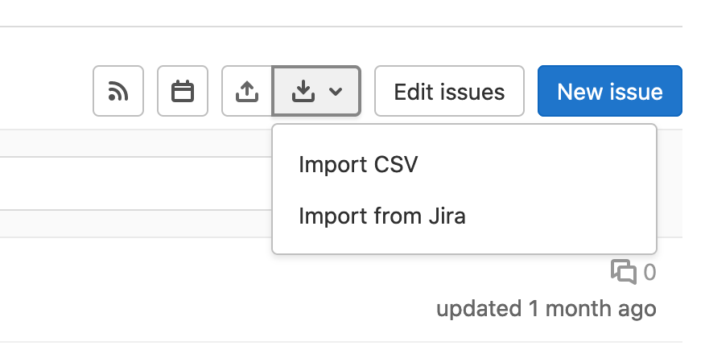

Fonkee Issues

Goal of this project is to make the transition from planning by PO/Project Manager, to working in gitlab with gitlab issues by Developers.
We should use the tools we are most familiar with, so for Planning/Estimates that would be sheets/Excel.
Because I don’t like to repeat stuff done by others (DRY), I made an effort to convert data from sheets/Excel into information that work with gitlab (issues).
His should fix problems
with
- Getting all the issues in Gitlab
- Getting all the issues with estimates (in Gitlab)
- And have a better idea of the planning via Gantt Planning in Mermaid (mermaid is a gitlab feature )
This is probably not the holy grail but if someone put time into creating a sheet with descriptions and perhaps estimate, it’s an effort worth preserving and continue working on.
how does it work
Working with Gitlab it’s possible to import issues via .csv.

But this is a very limited csv format:
"title","description"
"one","description one"
"two","description two"imported it would look something like
| title | description |
|---|---|
| one | description one |
| two | description two |
using the limitation
After experimenting I found that this is flexible enough to work with:
title
- use sections for example (
UX Design - Flowcharts
) - emojis
descriptions
- hard returns
- emoji
- links
- markdown (gitlab version has checkboxes for example)
/estimate 3hworks during import and adds that to the issue
Example what is possible in description:
yes import that also 👍
- [ ] one
- [ ] two
- [ ] three
Let's discuss this a bit,
oh and this
maybe more
And some more
🆙
/estimate 4hBasic idea
How to convert sheets/excel to files that work gitlab.
You create an estimate based upon a predefined template.
It has
- Section : where is this component (example:
UX Design) - Title: what is it (example:
Flowcharts) - Description: some extra information (example:
We need to investigate) - Estimate: how much time to build (example:
4h)
Current state
Create default, basic .csv files via src/ExampleFiles.hx
Convert default .csv files via src/ExampleMain.hx to usalbe files for
gitlab issues and
mermaid gantt planning
- estimate_2021.csv.converted.csv file for import into Giblab
- planning_2021.csv.converted.md markdown file mermaid planning
Extra file is generated from the estimate_2021.csv into a Mermaid Gantt planning. This
file is weird
because you have not set the date, but a planning is better then no planning.
If there is no planning, the estimate is a fine way of getting the information into gitlab. Change the starting dates and its workable.
(Gitlab) Issues
| Section | Title | Description | Estimate | |
|---|---|---|---|---|
| UX design | flowcharts | do | 4h | |
| wireframes | do 2 | 4 | ||
| Visual design | invision | x | 8h |
Sectionis added from the first time it appears, needs to start with sectionTitleneeded (no title, no entry in export)Descriptioncan have markdown features and enters for next lines.Estimatesin 4, 4h, 4d 4w
this sheet information will be translated to an csv you can import into gitlab
| title | description |
|---|---|
| UX design - flowcharts | do \n /estimate 4h |
| UX design - wireframes | do 2 \n /estimate 4h |
| Visual design - invision | x \n /estimate 8h |
Mermaid
gantt for planning
https://mermaid-js.github.io/mermaid/#/gantt
sheet specs
| Phase | Title | week 10 | week 11 |
|---|---|---|---|
| 1 maart | 8 maart | ||
| Server | Acceptance | x | |
| Production | x |
Phase will group the different titles in sections. And will be repeated if not set (in our example:
acceptance and production will be in the section Server)
Gant example
gantt
title A Gantt Diagram
%% this is a comment
dateFormat YYYY-MM-DD
excludes weekends
section Section
A task :a1, 2014-01-01, 30d
Another task :after a1 , 20d
section Another
Task in sec :2014-01-12 , 12d
another task : 24d
```Haxe
This is a Haxe project, read more about it in the README_HAXE.MD!